Что получилось
Godot теперь только рисует. Все правила — в одном модуле на Rust, который работает в игре на всех платформах, в браузере и на сервере.
Разделы
Как устроена игра
Где раньше жила логика игры и где она теперь. Переключите, чтобы сравнить.
Игра (Godot)
- интерфейс
- движок правил на GDScript
- скрипты 534 карт
- бот
Второй игрок (Godot)
- та же копия движка
- знает всю колоду и руку соперника
Сервер (Rust) + судья
- пересылал ходы
- запускал Godot без окна, чтобы проверить ход
- клиенты знали всё состояние
Логика жила в Godot. Её копию сервер запускал как отдельный процесс.
Игра (Godot) — только экран
- рисует снимок состояния и события
- отправляет действия
game/rules.gdвыбирает мост
Модуль правил (Rust)
rust/engine: все правила, 534 карты, бот, драфт арены, проверка колод- JSON API:
new,act,legal,snapshot,bot… - вид для каждого игрока без чужих скрытых карт
Сервер (Rust)
- сам ведёт партию тем же модулем
- каждому шлёт только его вид
- таймер хода, переподключение
- админка, журнал событий
Мосты: GDExtension (настольные и Android) · WebAssembly + JavaScriptBridge (браузер) · обычная зависимость Rust (сервер)
Движок правил на Rust
rust/engine (крейт classichs-engine, около 6200 строк). Зависимости: serde, serde_json и sha2; ввода-вывода нет.
Как проверено совпадение со старым движком
| Что | Итог |
|---|---|
| Партии / шаги / выборы бота | 7833 / 323 838 / 142 694 — все совпали |
| Карты, сыгранные в проверке | все 382 коллекционные, всего 505 |
Генератор случайных чисел (PCG32 Godot) и JSON.stringify | бит в бит |
| Проверка самой проверки | одно число карты изменили нарочно — тест сразу упал |
Что изменилось в протоколе
Сид перемешивания при муллигане раньше строился через внутренний hash() Godot, а его нельзя повторить в Rust. Теперь он строится через splitmix64. Поэтому версия протокола сетевой игры стала 2, и старые версии с новой играть не могут.
Как Godot достаёт до модуля
Один и тот же JSON API на всех платформах. Отличается только способ вызова.
| Платформа | Мост | Размер |
|---|---|---|
| macOS (универсальная сборка) | GDExtension (gdext 0.5.5), класс RulesEngine.call_json | 9,1 МБ |
| Windows, Linux | GDExtension, собирается в CI | — |
| Android arm64 | GDExtension, собран с NDK | 4,8 МБ |
| Браузер | rules.wasm + rules.js, вызов через JavaScriptBridge | +196 КБ в gzip ко всей загрузке |
| Сервер | обычная зависимость Rust | — |
Опробованные варианты для браузера
Работает со стабильным Rust и обычным шаблоном Godot. Модуль готов к первому кадру. 10 000 вызовов — 28 мс.
Сборка прошла (emsdk 4.0.20, nightly, 11 минут), но модуль требует исключения WebAssembly, которые Godot 4.7.2 не принимает (LinkError
__cpp_exception). Флаг для отключения из nightly убрали.Скорость вызова
Тонкий клиент
Интерфейс читает GameView — объект, который строится из снимка состояния движка. Поэтому экраны почти не поменялись.
bot).scenario и dump).draft и validate.Игра напрямую, по кодам
Тесты
| Где | Сколько |
|---|---|
| Godot (интерфейс и сценарии) | 354, все проходят. Тесты правил переехали в Rust. |
| Rust, движок | совпадение на записанных партиях, API, виды игроков |
| Rust, сервер | 23: полные партии, утечки скрытых карт, таймеры, переподключение, админка |
Сервер ведёт партию сам
Сервер сам считает партию, а каждый игрок видит только своё. Нажмите «Дальше», чтобы пройти один ход шаг за шагом.
match обоим: режим, соперник, ваше место (0 или 1)state обоим: каждому свой вид и первые карты. Колода и рука соперника скрыты.act {play, …}: «разыграть карту»act_error только игроку A. После 3 отказов партия заканчивается.state обоим: новый вид и события, отфильтрованные для каждогоmatch {rejoin} и свежий stategame_over: итог, звёзды ранга, счёт ареныЦифры
state (самое большое — 18 КБ)Безопасность
- Сервер — единственный источник правды. Клиент не получает скрытых карт соперника. Тест проверяет каждое сообщение и падает, если в нём есть скрытая карта.
- Пароли хранятся как хэши argon2id. Вход живёт 30 дней и продлевается при каждом входе. Сессия хранится как хэш.
- Публичному серверу нужен
wss://(TLS через обратный прокси). - Известное ограничение: номера объектов выдаются в порядке списка колоды. В играх через сервер список колоды соперника неизвестен, поэтому по номеру карту не угадать.
Лобби как в игре 2014 года
Коробки колод, медаль ранга, большая кнопка «Играть». Вход запоминается, а друзья и чат доступны на любом экране. Щёлкните картинку, чтобы увеличить.
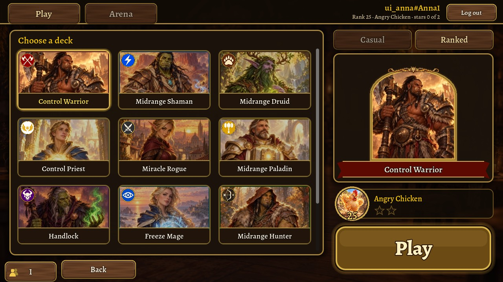
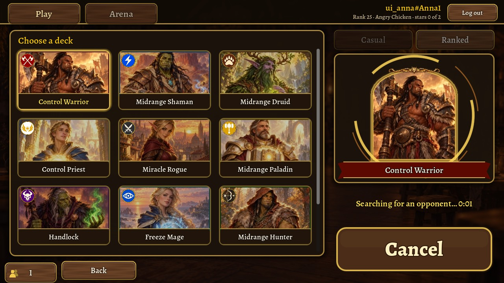
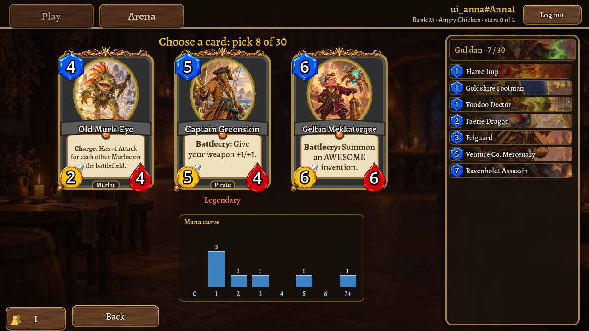
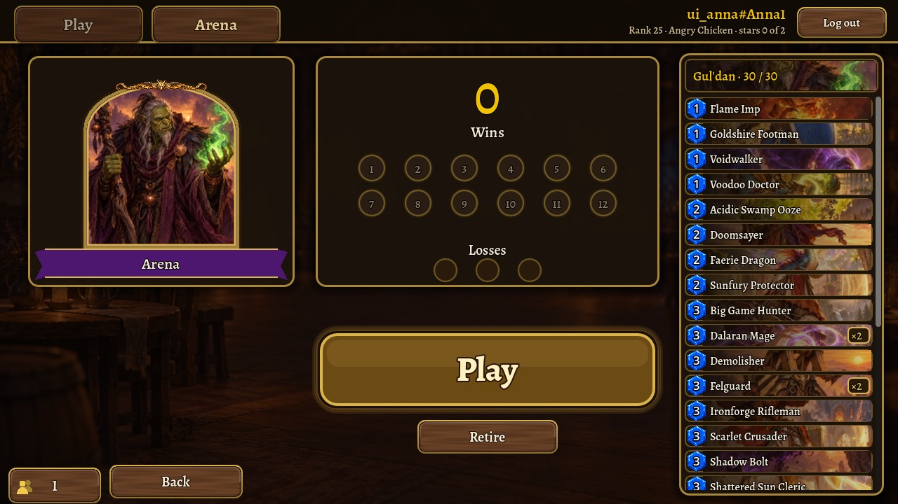
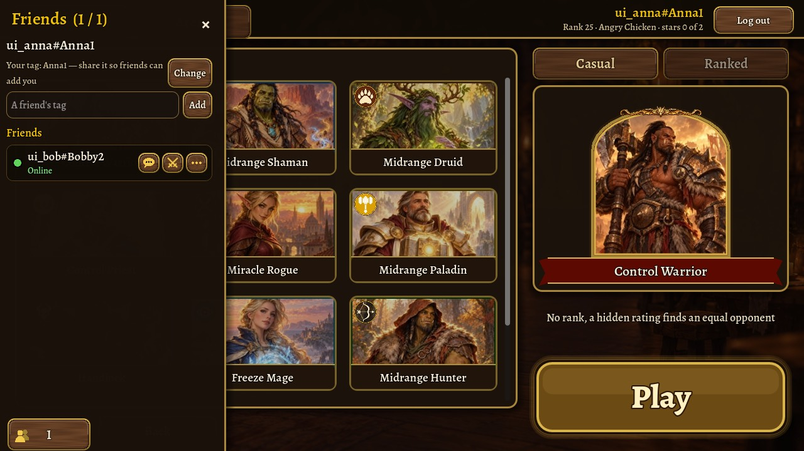
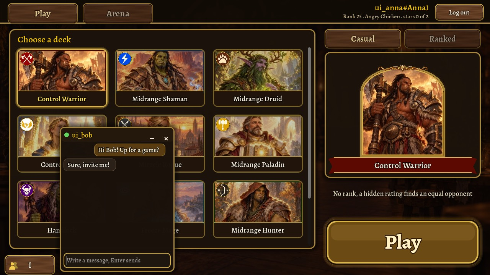
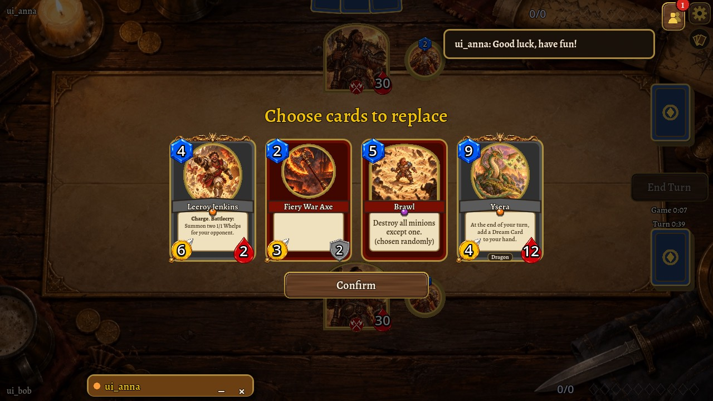
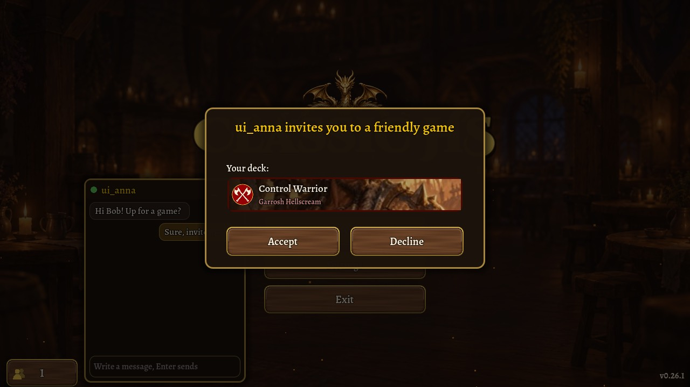
Панель администратора
Одностраничное приложение на Preact без сборки. Данные приходят через JSON API на Rust, работа с базой — через SeaORM. Изменения появляются сразу по WebSocket.
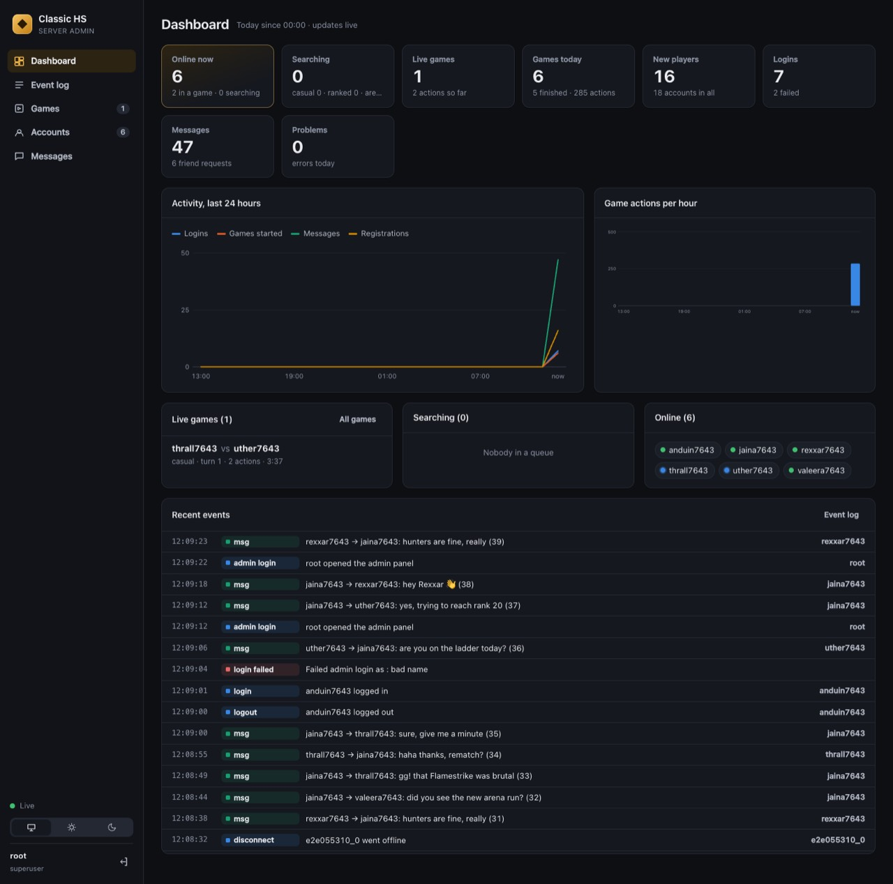
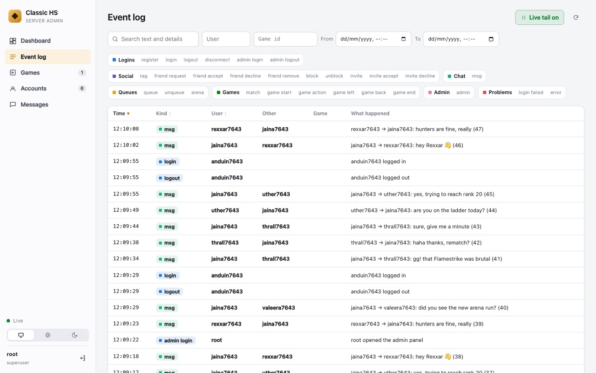
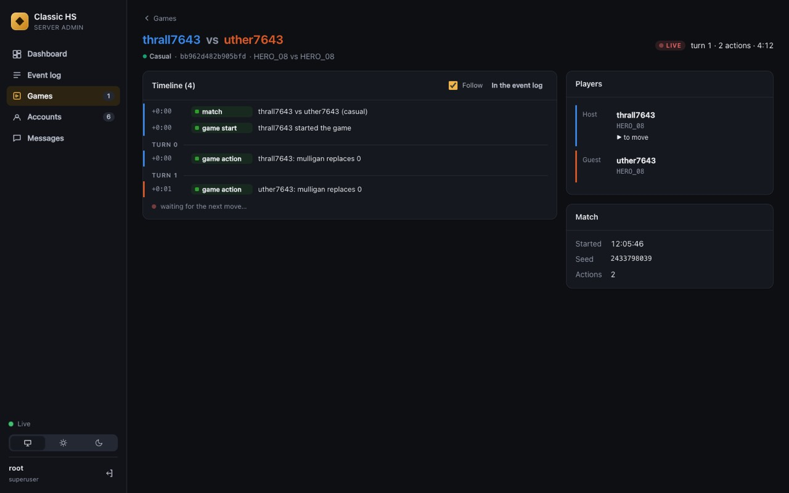
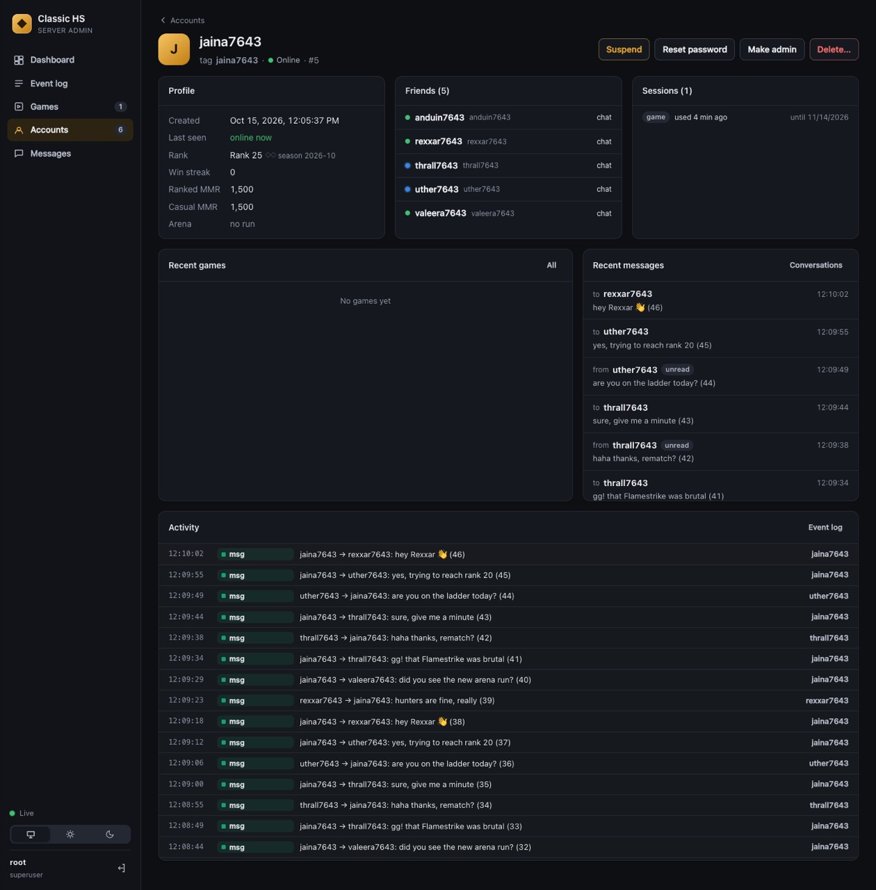
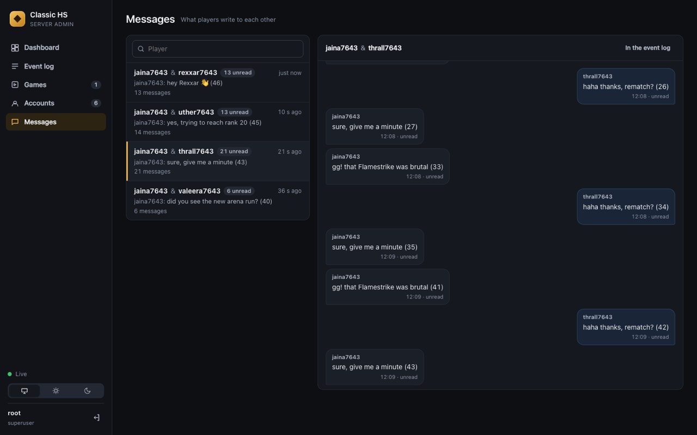
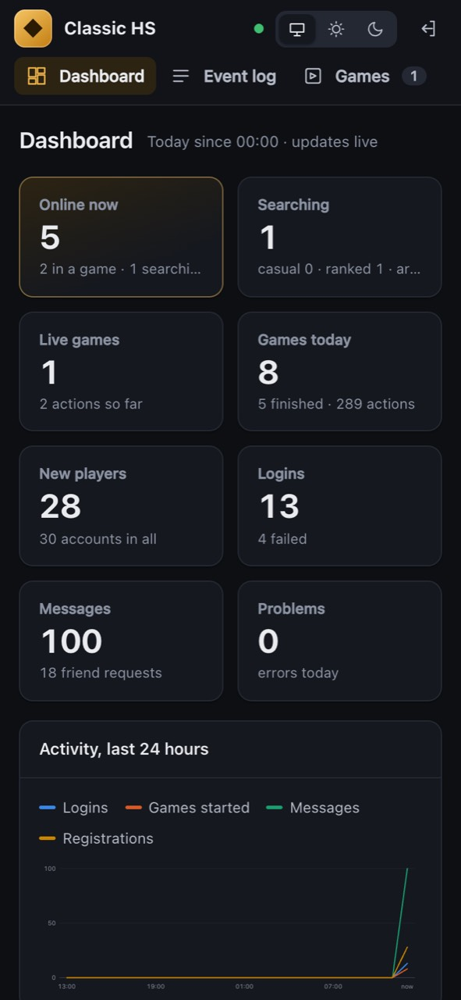
Что записывает журнал
Входы, неудачные входы, регистрацию, выход, обрыв связи, действия с друзьями, сообщения (кто кому и что), приглашения, очередь, арену, начало игры, каждый ход (ход, хэш, события), конец игры с причиной, действия администраторов и ошибки. Записи хранятся 90 дней.
Вход в админку
Сессия на 30 дней, браузер её помнит. Cookie с флагами HttpOnly и SameSite=Strict, токен CSRF в заголовке, проверка Origin, строгий CSP. Суперпользователя создаёт команда classichs-server admin <имя>.
Новый стиль артов: 2D
Готова половина: 267 карт из 534 (каждая вторая, из всех классов). Codex рисовал их в фоне. Пустых или сорванных пакетов не было.
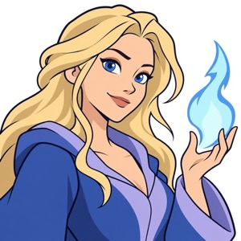
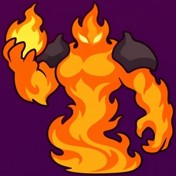
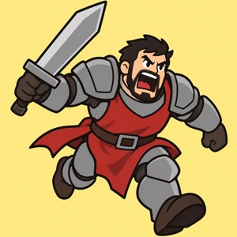
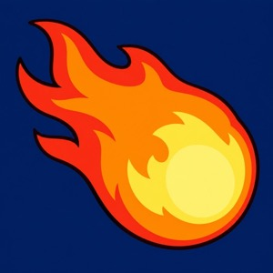
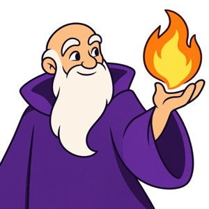
python3 tools/gen_art_styles.py --styles cartoon --all.Как запустить и проверить
Команды для сборки модуля, запуска сервера и тестов.
# модуль правил для своей платформы (игра без него не стартует) tools/build_rules.sh macos # или windows, linux, android, web # сервер: Godot ему больше не нужен cd server cargo run --release -- admin admin # один раз: администратор cargo run --release # ws://localhost:7377, админка: http://localhost:7377/admin # проверка: два клиента играют через сервер godot --headless --path . --script res://tools/server_e2e.gd -- casual # или ranked, arena # тесты ./run_tests.sh # Godot (cd rust && cargo test --release) # движок (cd server && cargo test --release) # сервер
В игре: «Сетевая игра» → «Через игровой сервер». Адрес сервера задаётся в настройках.
Что проверено
Каждую часть я запускал по-настоящему, а не только в тестах.
| Проверка | Где | Итог |
|---|
Что решить дальше
Решения за вами и известные ограничения.
- Стиль артов 2D: дорисовать вторую половину и сделать его набором в настройках.
- Подпись Android: добавить три секрета в GitHub, чтобы обновления ставились поверх.
- Сервер в интернете: если захотите, его нужно разместить за TLS (
wss://). - Новое название и отделение контента — по плану в docs/superpowers/specs/2026-10-15-content-separation-plan.md.
Известные ограничения
- Библиотеки для Windows и Linux собраны в CI, но здесь их не запускали. Android-сборку не запускали на устройстве.
- Если после перезапуска игры вернуться в партию через сервер, у трекера колоды нет списка колоды.
- Ошибка внутри движка в браузере выключает движок до перезагрузки страницы.